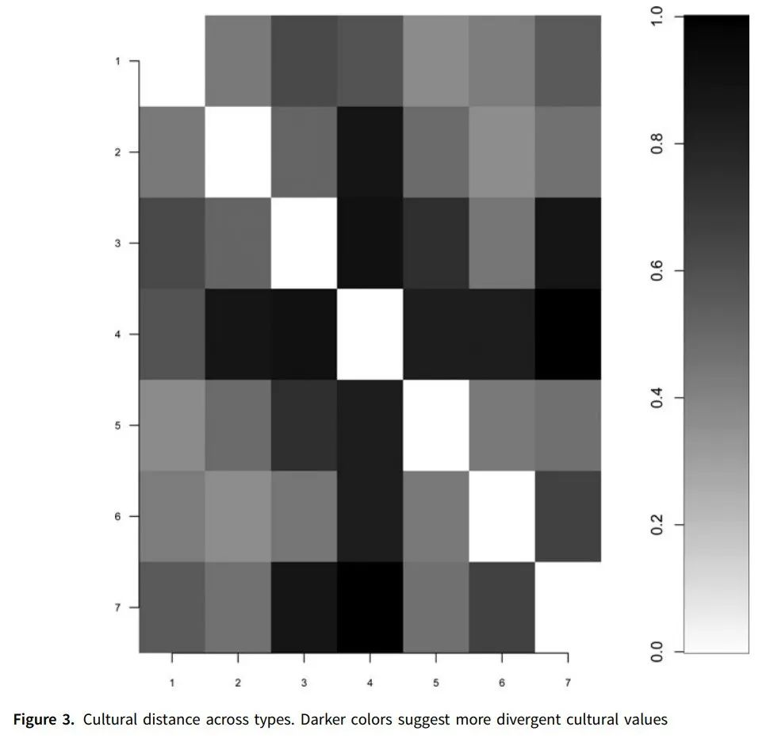

LisaBlaydes&JustinGrimmer：对政治文化异质性的测量|政观编译
收录于合集
#比较政治学 121 个
#政治文化 8 个
文献来源： Lisa Blaydes and Justin Grimmer, “Political cultures: measuring values heterogeneity”. Political Science Research and Methods , 2020(8), pp. 571–579.
作者简介： Lisa Blaydes，斯坦福大学政治学系教授；Justin Grimmer，斯坦福大学政治学系教授。
本文作者 Lisa Blaydes（左）和 Justin Grimmer（右）
政治文化是社会科学中的元概念（meta- concepts）之一，很多关注政治文化的定量研究的焦点在于国家文化、文化的多元性以及文化价值观与族群的关系。政治文化可视作不同族群的政治与社会境况发生互动的结果，尽管政治科学研究者对此有深刻的理解，但是就如何对政治文化进行定义以及操作化的议题上，目前学界尚未达成一致。
Wildavsky将文化定义为“将社会关系合法化的共享价值”，这一定义强调了文化的共识性和聚集性，基于这一定义的定量研究会利用大范围的民意调查结果来检验跨国情境下的文化差异。这种操作方式是一种代价非常高昂的化约主义做法，但是也是在概念的可操作性和复杂性之间做出的平衡。
作者采用了最近一波的世界价值观调查数据，对57个国家的抽样数据进行分析，讨论这些国家之间存在的文化异质性（ 译者注： 世界价值观调查第七波数据已于近日公开，有兴趣的朋友可以前往官方网址http://www.worldvaluessurvey.org/WVSDocumentationWV7.jsp下载）。
模型
研究者更喜欢通过世界范围内的跨区域比较调查项目来绘制一幅政治文化地图，探索民众的信仰、价值观和情感倾向。尽管这种处理方式无法完整地表达文化在不同情境中的体现，但是作为一种概念化的操作，即共享的社会价值观，这种做法在大范围的比较研究中依然是有价值的。
作者使用贝叶斯分层模型，将个人设为第一层，嵌套在第二层的国家中。在这里，作者并没有按照地理的范围来区分文化，而是定义了一个亚文化概念：即全球范围中相似的价值观表达框架。每一个个体从属于一个独特的亚文化，而国家层面的文化是这种全球亚文化的混合体。语言、宗教团体、地理区隔、移民以及贸易等多种因素都会影响亚文化的存在。
Inglehart（1997）将个人层面的价值观聚合为国家层次的文化，而Seligson（2002）则批评这种做法，认为他忽略了国家间的差异。本文作者在这种争论中建立一个中间的模型，既考虑到个人的价值观，也抓住了国家的文化异质性。
作者基于Elkins和Simeon（1979）提出的类别来选择测量文化的一系列题项，包括人们如何定义社群、社会信任、女性地位以及何为国家的优先事项等。模型和贝叶斯主题模型（Bayesian topic model）以及非参数的唱名投票模型（roll-call vote）类似，都是混合模型，并且和单协变量的潜在类别分析（Latent Class Analysis with a single covariate）非常接近。
在模型中，作者假定属于单一亚文化的每个应答者可以由一个服从多项分布的预测向量表示，他们的应答也同样服从多项分布。而国家层面的亚文化则服从狄利克雷分布（Dirichlet distribution）。作者使用变分近似（variational approximation）方法来估计模型中的后验。为了避免模型在聚类过程中的过度拟合或者是方差损失，作者采取十重交叉验证，基于BIC、AIC或非参数贝叶斯推断来对模型进行评估。
模型结果
模型结果表明，不同国家和文化的应答者确实存在某种共同价值。作者将不同国家和地区的亚文化分为七个类型，并将57个国家和地区在这七个类型的得分进行整理，结果显示：
（1）第一种类型的亚文化是德国和俄罗斯的典型公民文化类型，在日本也是主流文化之一。这种亚文化受到过去对外战争的历史影响。这里的民众不在乎休闲时间，也没有对政治活动的关切。隶属于这一亚文化的民众价值观类似于所谓“后物质主义”，但是他们更强调刻苦地工作。
（2）第二种类型的亚文化在拉丁美洲更为明显，而美国、加拿大等国也有这部分特征的民众存在。他们重视宗教，但同时也对其他人表现出一定的宽容。他们相信辛勤的工作很重要。同时，这一亚文化也体现出对权威相当高的尊重。
（3）第三种类型的亚文化是阿拉伯世界的典型特征，在摩洛哥和加纳等地也有表现。他们非常重视宗教，对权威也表现出相当高的尊重。但是他们很关心个人与周遭环境的安全，因此相比于其他类型，这种亚文化下的民众更具有歧视性。他们重视工作，认为工作是一种社会责任，但是在女性地位问题上，他们表现出非常明显的性别歧视。
（4）第四种类型的亚文化下的民众，和其他类型相比，其数量在各国都是比例最低的。他们常常不回答访员的问题，这可能有三种解释：其一，他们缺少政治知识，因此不愿意提供看起来无知的答案；其二，他们不喜欢面对面式访谈；其三，他们不愿意回答问题。由于信息缺失，这一类型的文化特征无法捉摸。
（5）第五种类型的亚文化在某些东亚地区（例如中国香港地区、泰国等）以及塞尔维亚、埃塞俄比亚和美国表现非常明显，这一部分的民众不重视宗教，也不在意帮助别人。他们对环境毫不关心。
（6）第六种类型的亚文化在印尼、伊朗、土耳其、格鲁吉亚、卢旺达、加纳和越南非常明显。这类民众乐意参加战争，不歧视女性。但是他们对异教徒和拥有疾病的邻居并不友善。他们认为需要维持秩序，工作和技术很重要，而小孩也应该非常刻苦。
（7）第七种类型的亚文化是唯一极度看中孩子独立性的类型，他们认为孩子的想象力很重要。他们很宽容，也很重视友谊。他们并不强调权威，但是非常在意环境。这一部分的民众也比较符合“后物质主义价值观”的描述。这部分民众主要分布在斯堪的纳维亚半岛，以及美国和部分西欧国家。
那么，如何来描述各个国家和地区的文化相似性呢？对此，作者对不同类别的亚文化做了一个矩阵图来表示各亚文化间的“距离”。颜色越深代表距离越远。（这其实类似一个相关系数的热度图）

潜在应用
一、检验发展与冲突的关系
作者认为，尽管对于文化的因果效应需要持谨慎态度，但是一个国家的文化多样性水平可能会影响经济不发达和国内冲突之间的联系。因此作者猜想文化异质性可能是经济结果和政治暴力的根源。也可以考虑过去的国内冲突如何推动了一种暴力阴影下共识的形成，也即文化同质性的概念。
二、探索文化异质性的起源
这些聚合的文化及其异质性能够体现不同情境的地理与历史渊源。比如Mahoney（2010）写道，西班牙裔的美国人确实有一种相似性，特别是殖民经历。这反映了与天主教会有关的制度安排。而南美洲与东欧相比，其受到了单一的大规模外部冲击，东欧则处于文化和宗教的边缘，受到各种宗教的影响。因此南美表现出相当高的文化同质性，而东欧则存在巨大的文化差异。
总结
作者在这篇文章里探索性地提出了一种文化框架，对文化的国家间差异和国家内差异进行建模，并描述了此框架的内涵与体现，最后作者提出了这一框架可能潜在的应用。
编译：刘天祥 审校：杨端程 编辑：康张城
【政文观止Poliview】系头条号签约作者